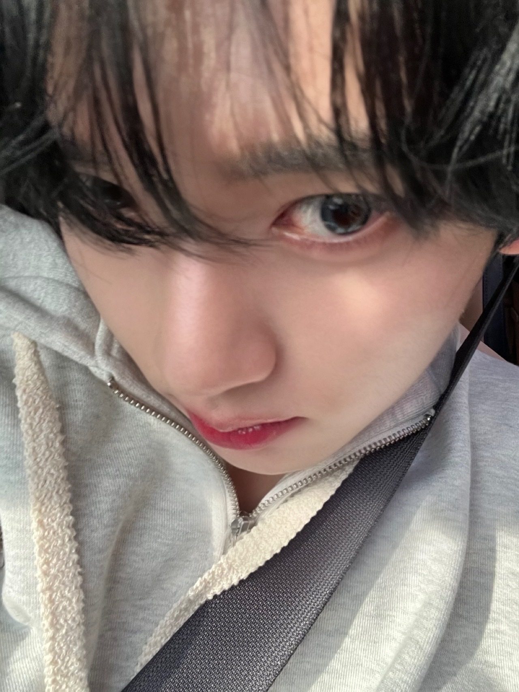
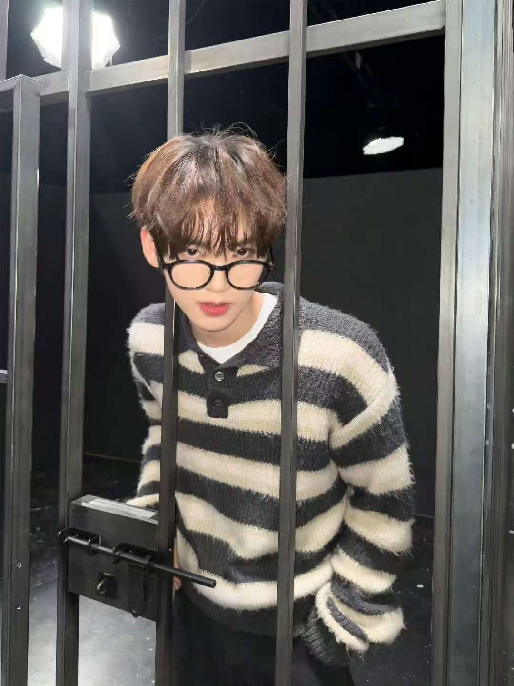
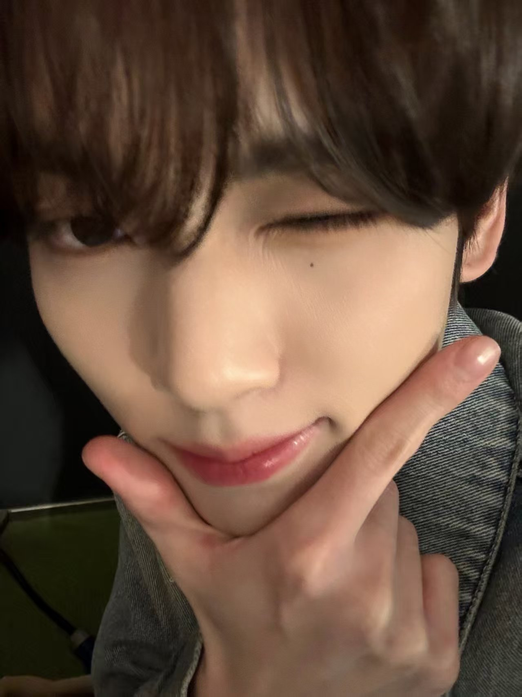
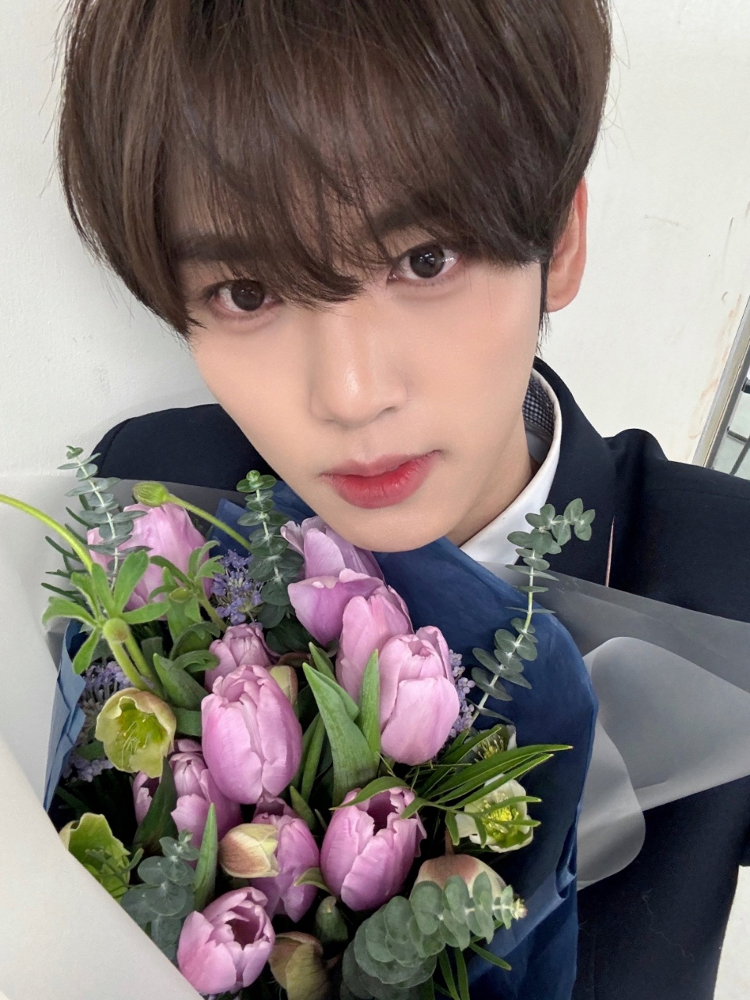

二.个人简介：
姓名:Han Yu Jin||ハン·ユジン 中文名:韩维辰 昵称:尤金崽 脸赞宝宝 小学生崽 九尾狐狐胎名:景0|(小不点，音译:波多哩)英文名:NOAH生日:2007.03.20星座:双鱼座国籍:韩国 出生地:韩国大邱 居住地:韩国京畿道龙仁市 家庭成员:爸爸妈妈弟弟Terry(约克夏犬) MBTI : INTJ/ISTJ 身高:181.5cm(成长ing)代表emoji: 学校:毕业于首尔翰林艺高 个人粉丝名[已认证]:Mulbokdanz(软桃团)练习时长:2年3个月 所属公司:YH ENTERTAINMENT定位:门面 主舞组合:AND2BLE

三.showcon结束小作文（bubble）：
showcase演唱会这么快就结束了真的很担心也很激动但是顺利结束了所以很幸福
就像刚才说的那样，越幸福就越觉得可惜希望粉丝能感到可惜...嘿
其实出道后，能和这么多粉丝们一起度过这么快的时间是个不容易的机会为了让大家看到我所以
努力制作了这次的show concert 在准备这次演唱会的过程中我们会更加成长希望能传达我们想要好好表现对的心意，
以后也请多多关照我爱你们，也非常感谢我们所有的工作人员
谢谢你给我制造了美好的回忆和幸福的时刻以后也会经常来的知道我有多爱你吧？

四.关于喜欢和讨厌：
1.喜欢吃糖葫芦，可以一口气吃十串都不会腻，最爱蓝莓味 2.最喜欢的甜点是珍珠冰淇淋， 3.最爱口味是柠檬酸橙和双份巧克力 4.喜欢吃拉面和麻辣烫，每次吃到麻辣烫都会跑来泡泡说自己心情超棒 5.喜欢吃栗子，经常自己空气炸锅烤栗子吃，还划伤过手 6.喜欢土豆板栗红薯和玉米，说自己40岁以后想要去种庄稼 7.最喜欢的香味是桃子香，喜欢桃子味的饮料和软糖，唇膏也是桃子味 8.超级喜欢吃水果，尤其是冻蓝莓 9.是豆芽脑袋，火锅喜欢下豆芽 10.不喜欢吃蘑菇和茄子 TT.TT 11.不喜欢去医院也不喜欢吃药，很能忍痛，小时候骨折了好几天去医院才发现，感冒了也不会特意去吃药 12.喜欢的季节是冬天，也喜欢玩雪 13.爱好是找小猫看，曾经的手机壁纸是小猫，路上碰到小猫会蹲下拍照

五.珍贵的他：
1.会认真看粉丝的信，把大家在信里问到的琐碎日常通过直播或者泡泡分享给大家 2.会努力认证粉丝的礼物，小到手机壳大到衣服首饰和应援，还会把信上的贴纸贴到自己的小风扇上 3.每次获奖打歌都会发小作文感谢大家 4.会点赞大家的评论和画，把饭绘换成泡泡聊天背景87.签售主动在小本本上准备中文flirting给粉丝 5.怕粉丝觉得直播无聊，平时会把有趣的事记在平板备忘录上一项一项说给大家 6.粉丝想看的challenge会尽力满足，自己在宿舍换衣服跳法修散打，自己清唱哈吉嘛在泡泡发给粉丝 7.出道后第一次大额消费是买了代表粉丝的玫瑰项链 8.下班路会努力开窗和粉丝们打招呼，不能开窗也会打开手机灯/在手机上打字"维辰回去啦我爱你们 9.半夜悄悄在泡泡发我爱你因为宵禁又默默删掉 10."不要因为习惯忽略珍贵的事物'